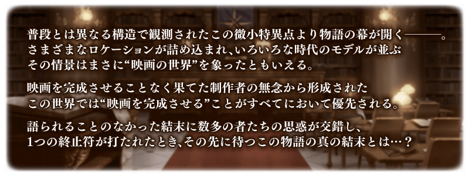
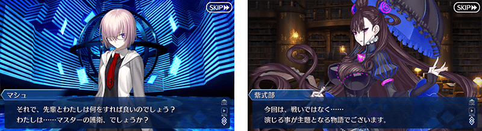
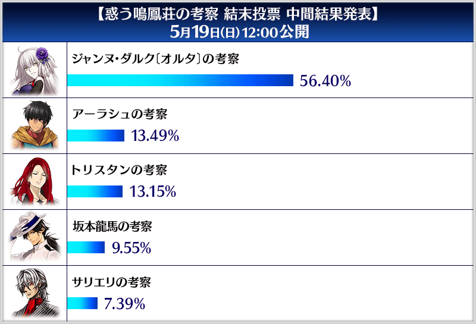
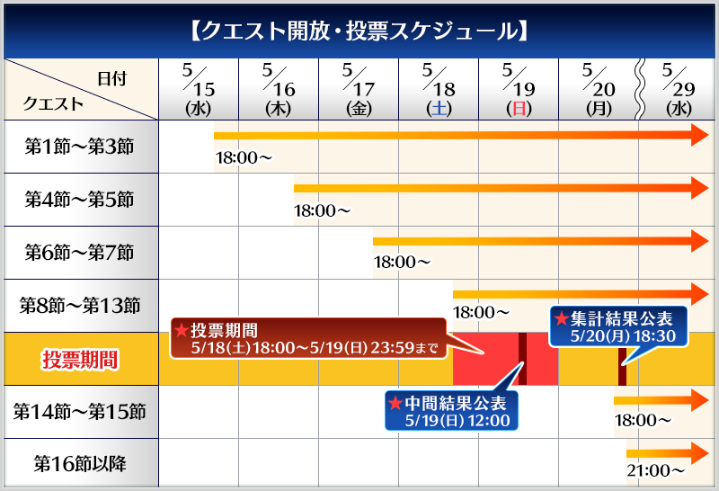

◆活動舉辦期間◆
2019年5月15日(三) 17:00～5月29日(三) 11:59
◆活動概要◆
舉辦期間限定活動「困惑鳴鳳莊的考察」！
這次的舞台是加勒比海的好萊塢！？
為了消除現已逝世的電影導演遺憾，帶領自迦勒底選擇的新監督和分配角色，將未完的電影完成吧！
※本頁面皆為開發中圖片。會有與實際圖片相異的情況。 ※一部份的關卡為日後開放。
◆活動參加條件◆
滿足以下條件的Master才能參加
・通過「特異點F 炎上汙染都市 冬木」
◆有關從者真名的注意◆
在2018年12月31日(二) 23:00以後新配信的主線故事、期間限定活動、一部份關卡、宣傳活動及召喚中，會顯示隱藏真名的對象從者真名。
※已經配信的主線故事、復刻活動、一部份關卡中不在此限。

【5月18日(六) 17:00追記】
通過期間限定活動「困惑鳴鳳莊的考察」的主線關卡至「第13節」，投票給你想看人物考察做為劇情的後續吧！
根據來自各位的投票，集到最多票數的考察會被採用為劇情的結尾。
※投票中未被選到的考察，日後會追加到圖鑑(マテリアル)。
◆投票期間◆
2019年5月18日(六) 17:00～5月19日(日) 22:59
※透過投票選擇的考察後續預定2019年5月20日(一) 17:00(預定)於遊戲內公開。 ※本公告中，透過投票選擇的考察統計結果預定2019年5月20日(一) 17:30(預定)刊載。
◆投票條件◆
請注意想投票給考察，必須通過期間限定活動「困惑鳴鳳莊的考察」的主線關卡至「第13節」才能進行。
◆投票方法◆
通過「第13節」的話，只限投票期間內開放5個「結尾投票關卡」。執行這之中自己想投票的考察關卡就算投票完成。
※請注意在結尾投票關卡沒有文字冒險部份。 ※請注意通過任1個結尾投票關卡的話，無法執行其他的結尾投票關卡。
關於透過結尾投票的報酬
做為給在投票期間中各位投票的報酬，在5月20日(一) 17:30(預定)贈送魔力稜鏡200個！
◆結尾投票參加報酬◆
魔力稜鏡200個
◆贈送對象◆
2019年5月19日(日) 22:59前執行結末投票關卡的御主對象
◆領取期間◆
2019年5月20日(一) 17:30(預定)～5月29日(三) 11:59
※2019年5月20日(一) 18:30(預定)～5月29日(三) 11:59的期間中，在初次進行登入的時間點，做為登入獎勵贈予至禮物箱。 ※請注意未投票的情況無法領取報酬。 ※期間內未登入的話無法領取。 ※結尾投票參加報酬只能領取1次。
【5月20日(一) 17:30追記】
發表5月18日(六) 17:00～5月19日(日) 22:59進行的決定劇情結尾的結尾統計結果。
劇情的結尾決定為貞德〔Alter〕的考察！
向參加投票的各位贈送魔力稜鏡200個！

※由於得票率以小數第3位無條件捨去進行刊載，合計値不會為100%。
【5月19日(日) 11:00追記】
有關自5月18日(六) 17:00開始的期間限定活動「困惑鳴鳳莊的考察」的結尾投票，發表投票數的中間結果。
參考中間發表的結果。也等待著來自尚未投票的各位投票！

※5月19日(日) 14:30圖片修正 ※5月19日(日) 9:00的統計結果。 ※由於得票率以小數第3位無條件捨去進行刊載，合計値不會為100%。
享受故事的主線關卡將逐日開放。
另外，自5月18日(六) 17:00與主線關卡「第8節」～「第13節」的開放會一起在在遊戲內進行讓各位投票決定劇情的展開。
詳情會在日後的公告公開。
※由於本活動是做為通過主線關卡來追隨劇情形式的活動，沒有自由關卡。
投票期間為5月18日(六) 17:00～5月19日(日) 22:59！

其他還有、「Fate/Grand Order 春之神秘祭2019」和期間限定「困惑鳴鳳莊的考察Pick Up召喚」同時舉辦！
關於詳情，請自下述橫幅確認。